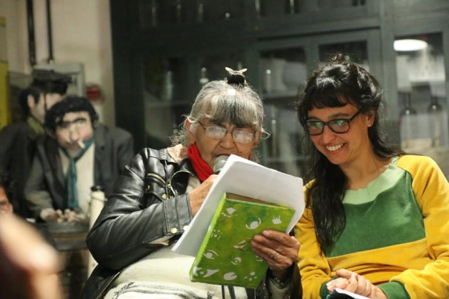

Formación

Desde su misma creación y siendo uno de los principales objetivos institucionales, dio comienzo el Programa de Formación teórico práctico con el fin de capacitar e investigar en el campo de la locura, que elegimos como campo de trabajo.
Una Formación teórico-práctica a partir de la experiencia de nuestro quehacer en el Centro de Día de Casandra en cuanto a los distintos acompañamientos a los que nos ha llevado el trabajo con la locura.
A partir de ello revisamos bibliografía y experiencias como manera de realizar una tarea de investigación sostenida y avalada por nuestra misma práctica.
En primer lugar se trata de realizar una puesta en valor de lo que diversos autores desde distintas prácticas han desarrollado en el trabajo con la locura, en la locura, dentro y fuera del campo del psicoanálisis y del pensamiento argentino y latinoamericano, con una posición a la vez abierta y crítica que nos sirvan de marco y de sostén de este cometido. Pichon Riviere, Alfredo Moffatt, Rodolfo Kusch, Emilio Rodrigué, Marcelo Percia, Oscar Masotta, Fernando Ceballos, Pal Perbart, etc.
Lo mismo que las políticas públicas en torno a la salud mental desde que comienzan a ser motivo de movimientos a través de leyes, decretos, planes y programas que socavan o no un trabajo acompañante con la locura.
Revisamos también con el mismo espíritu a autores franceses, estadounidenses, ingleses, etc: Francoise Davoine, Gaetano Benedetti, Frieda Fromm Reichmann, Gisela Pankov, Harry Stack Sullivan, David Cooper, Gilles Deleuzze, Felix Guattari, Jean Ouri, Michel Foucault, Jacques Lacan, Franco Basaglia, etc
Nos guiamos por algunas marcas dejadas por el campo del arte como Jacobo Fijman, Alejandra Pizarnik, Aida Carballo, Glauce Baldomin, Jorge Bonino, Antonin Artaud, entre otros.
No descartamos documentales y películas que nos sirven como material de discusión.
Formación Casandra para Público
Actividades de formación teórico-práctica
- Primer Encuentro de Reflexión clínica abierto a la comunidad a cargo de Claudia Huergo: Explorar desde la literatura algunas posibles figuras del acompañante en la locura llevado a cabo los días 15,22 y 29 de junio, 2 de septiembre y 5 de octubre de 2007.
- Los días 9 y 10 de mayo de 2008 se realizaron el Segundo Encuentro de Reflexión Crítica abiertas a la comunidad: COMUNIDAD DE LOCOS con proyección del documental y la participación de Claudia Huergo, Eva Bertaina, Raul Vidal, Rosa Lopez y Galia Kohan
- Jornadas Campo de locura en la transmisión del psicoanálisis: Emilio Rodrigué. Viernes 28 y sábado 29 de Agosto 2009, 9.30 hs. Con la participación de María Caglieris, Claudia Huergo, Alicia Lerner, Rosa Lopez, Walter Martinez, Marcelo Percia, Urania Tourinho Perez y Raul Vidal.
- Participación como co-organizadores en Salvador Bahía, Brasil del Coloquio Emilio Rodrigué los días 2 y 29 de mayo de 2010.
- Seminario Abierto a la Comunidad: Pasajes y citas entre Literatura, cine y Psicoanálisis. 07 y 21 de mayo, 04 y 18 de junio y el día 2 de julio de 2011 Jorge Amado y su Doña Flor. Entre eróticas y duelo a cargo de Claudia Huergo.
- Encuentros abiertos a la Comunidad: Pasajes y citas entre Literatura, Teatro y Psicoanálisis ¿Qué Comunidad de locos? Fernando Pessoa sus heterónimos y los otros. Días 16 de septiembre, 1, 15 y 29 de octubre de 2011 a cargo de María Caglieris, Claudia Huergo, Alicia Lerner, Rosa Lopez y Walter Martinez y la presentación de la obra teatral El Marinero dirigida por Giovani Quiroga y Galia Kohan.
- 2016-17. Seminario de Formación Teórico Práctico abierto: Trabajo e investigación en torno a la locura y sus posibles acompañamientos a cargo de Carlos Romani, Rosa Lopez, Jesica Maldonado e invitados: Carlos Bergliaffa, Javier Macías, Natalia Monasterolo, Alicia Miranda entre otros. Proyección y discusión de películas y documentales.
Presentaciones
- LA MUJERCITA VESTIDA DE GRIS. Relato de una subjetividad mal—tratada. Marina Rene Perez- Rosa B Lopez- Natalia Monasterollo de Editorial Eduvim- Creación colectiva en la que se reflexiona sobre la historia de vida relatada por una de las autoras: sobre el engranaje psiquiátrico, que la atrapa en sus redes durante 26 años, lo jurídico que la declara inimputable y e impone una “medida de seguridad curativa” y lo político-social que lo condice y contribuye a su implantación. Este libro fue presentado en la sede de la Universidad de Villa María en Córdoba, en el espacio de L’Ecole organizado por Casandra con la participación de las autoras, TotoLopez, Claudia Huergo y Gabi Sosa y la presencia de gran cantidad de público.
- EMILIO RODRIGUÉ libro editado en Salvador Bahía en la que Casandra fue co-organizadora del evento del mismo nombre y en la que se publican en forma bilingüe los trabajos de María Caglieris, Claudia Huergo, Alicia Lerner, Rosa Lopez y Walter Martinez. Entre otras.
Reuniones Clínicas
Se realizan en el seno de la Institución un viernes por mes. Han ido variando a través de los años. En ellas los profesionales presentan Material Clínico o Material Teórico a su elección o determinado previamente con la posterior discusión de dicha exposición. Se envían o recomiendan ciertas lecturas previas a la presentación.
Actividades audiovisuales
Se han realizado distintas modalidades de presentación ya sea a través de una película, proyección audiovisual, u otras formas de exposición que contengan material atinente a nuestro trabajo fundamentalmente referido a la locura. Vg: Las mínimas cosas, Si puofare, Comunidad de locos, La psicofarmacología.
Presentaciones de trabajos teóricos e intercambio de experiencias
Davoine, Sonia Weber, Ann Marie Van Hove y Maríe Jardin, entre otros.
Actividades teórico-prácticas realizadas
- 2004 y 2005. El Seminario- Taller con carácter teórico práctico: Tejer con los lazos de la locura, realizado de marzo a diciembre. El mismo fue dictado por la Lic. Rosa Lopez. Frecuencia quincenal.
- 2006, 2007 y 2008. El Seminario teórico-práctico: El encuentro con el saber del sujeto supuesto discapacitado: Terapias alternativas a la internación psiquiátrica a cargo de la Lic. Rosa Lopez. Frecuencia quincenal.
- 2009. Jornadas de discusión sobre el trabajo en instituciones alternativas a la internación psiquiátrica y Pre-jornadas del Coloquio Emilio Rodrigué. Frecuencia quincenal.
- 2011-2012. Seminario Taller: Función acompañante en los dispositivos de trabajo con la locura.
- 2013-2014. Seminario Taller: Creación del sujeto y del objeto en el trabajo con la locura.
- 2015: Seminario Taller: Encuentros e interrogantes en torno a la clínica en los dispositivos de trabajo con la locura.
- 2018: Seminario taller de investigación grupal a partir de los seminarios y la práctica laboral colectiva en el año 2017.
- 2019/20: Seminario Taller: La presentación Clínica crear, una instancia de intercambio y discusión sobre la clínica que practicamos.